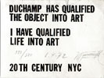

39. Ein wahrhafter Fürst ist der Künstler der Künstler; das ist, der Director der Künstler. Jeder Mensch sollte Künstler seyn. Alles kann zur schönen Kunst werden. Der Stoff des Fürsten sind die Künstler; sein Wille ist sein Meißel: er erzieht, stellt und weist die Künstler an, weil nur er das Bild im Ganzen aus dem rechten Standpunkte übersieht, weil ihm nur die große Idee, die durch vereinigte Kräfte und Ideen dargestellt, exekutirt werden soll, vollkommen gegenwärtig ist. Der Regent führt ein unendlich mannichfaches Schauspiel auf, wo Bühne und Parterre, Schauspieler und Zuschauer Eins sind, und er selbst Poet, Director und Held des Stücks zugleich ist.
Novalis: "Glauben und Liebe oder der König und die Königin." In: F.E. Rambach (ed.): Jahrbücher der Preußischen Monarchie unter der Regierung Friedrich Wilhelms III., Vol. II, Juli 1798.
Das Leben eines wahrhaft kanonischen Menschen muss durchgehends
symbolisch sein. Wäre unter diese Voraussetzung nicht jeder Tod ein Versöhnungstod? – mehr oder weniger, versteht sich – und ließen sich nicht mehrere höchstmerkwürdige Folgerungen daraus ziehen?
Novalis: Fragmente vermischten Inhalts. In: Schriften, Vol. II. [Eds.: Ludwig Tieck & Friedrich Schlegel] Fifth Edition. Berlin: G. Reimer, 1837, pp. 237/238
Lasset uns darum unser Leben in ein Kunstwerk verwandeln, und wir dürfen kühnlich behaupten, daß wir dann schon irdisch unsterblich sind.
Wilhelm Heinrich Wackenroder & Ludwig Tieck: Phantasien über die Kunst, für Freunde der Kunst. Hamburg: Friedrich Perthes, 1799.
Jeder progressive Mensch trägt einen nothwendigen Roman a priori in seinem Innern, welcher nichts als der vollständigste Ausdruck seines ganzen Wesens.
Friedrich Schlegel: Fragmenthefte. [Literary Notebooks, p. 71, nr. 572.]
"Alle Menschen sind Künstler."
"Alles, was der Mensch als seine Erweiterung aneignend bildet, muß er kunstmäßig bilden."
Friedrich Schleiermacher: Brouillon zur Ethik, 1805/1806. [Ed. Braun, II, p. 184.]
[Schleiermacher's] Verdienst ist es u.a., in dieser Situation gezeigt
zu haben, daß der Mensch nicht gänzlich das Gebiet der
Kunst verlassen kann. Denn so wie der, der schreibt, seine bestimmte
handschrift hat, so symbolisiert sich der Mensch selbst noch in
und an seine Werken der Theorie und der Praxis. "Alle Menschen sind
Künstler" – dies ist nicht nur der dialektische Aufhebung des
Geniebegriffs, indem das Genie nicht mehr der einsame große
Einzelne ist; sondern der Satz schließt ein, daß alle
Werke des Menschen etwas verraten, was über ihren beabsichtigten
Zweck hinausgeht.
Gunter Scholz: Schleiermachers
Musikphilosophie. Göttingen: Vandenhoeck & Ruprecht, 1981,
p. 152.
Im Epideiktischen des Virtuosen kippt die Kunst als
Selbstdarstellung zur bloßen Selbstdarstellung um, in welcher
es kein wahres Selbst mehr gibt.
Günter Scholtz: Schleiermachers
Musikphilosophie. Göttingen: Vandenhoeck & Ruprecht,
1981.
Man ist um den Preis Künstler, daß man das, was alle
Nichtkünstler "Form" nennen, als Inhalt, als "die Sache
selbst" empfindet. Damit gehört man freilich in eine verkehrte
Welt : denn nunmehr wird einem der Inhalt zu etwas bloß
formalen, – unser Leben eingerechnet.
Friedrich Nietzsche: Umwertung
aller Werte, p. 387.
I like living, breathing, better than working. I don't think that
the work I've done can have any social importance whatsoever in
the future. Therefore, if you wish, my art would be that of living:
each second, each breath is a work which is inscribed nowhere, which
is neither visual nor cerebral. It's a sort of constant euphoria.
Marcel Duchamp. In: Pierre Cabanne:
Entretiens avec Marcel Duchamp. Paris: Pierre Belfond, 1967.
[Trans. by Ron Padgett: Dialogues with Marcel Duchamp. New
York: Da Capo Press, 1987, p. 72.]
At that time, I was preoccupied with the idea of doing a certain
thing in advance, of declaring "at such and such an hour I'll do
this . . ." I never did it. I would have been embarrassed by it.
Marcel Duchamp. In: Pierre Cabanne:
Entretiens avec Marcel Duchamp. Paris: Pierre Belfond, 1967. [Trans. by Ron Padgett: Dialogues with Marcel Duchamp. New
York: Da Capo Press, 1987, p. 49.]
Natur ist die Gestalt, unter welcher der Mensch hoher Kulturen
den unmittelbaren Eindrücken seiner Sinne Einheit und Bedeutung
gibt. Geschichte ist diejenige, aus welcher seine Einbildungskraft
das lebendige Dasein der Welt in bezug auf das eigene Leben zu begreifen
und diesen damit eine vertiefte Wirklichkeit zu verleihen versucht.
Oswald Spengler:Der Untergang
des Abendlandes. Umrisse einer Morphologie der Weltgeschichte. Erster Band. Gestalt und Wirklichkeit. München: C.H. Beck,
1923, pp. 9/10.
Het menschzijn is No. een en dan komt de kunst (of geen
'Kunst') van zelf heh. Ik schrijf maar kort maar je begrijpt me
wel.
Piet Mondriaan: Letter to J.J.P. Oud. In: Kees
van Wijk: Internationale revue i 10. Utrecht 1980, p. 90,
note 36. [Quoted by Yve-Alain Bois: Arthur Lehning en Mondriaan.
Amsterdam: Van Gennep, 1984, p. 18.]
"Every utterance and
every gesture that each of us makes is a work of art."
R.G. Collingwood:
The Principles of Art. Oxford: Oxford University Press, 1938,
p. 285.
The future of art seems no longer to lie with the creation of enduring
masterworks but with defining alternative cultural strategies, through
series of communicative gestures in multi-media forms. As art and
non-art become interchangeable, and the masterwork may only be a
reel of punched or magnetized tape, the artist defines art less
through any intrinsic value of art object than by furnishing new
conceptualities of life style and orientation. Generally, as the
new cultural continuum underlines the expendability of the material
artifact, life is defined as art — as the only contrastingly
permanent and continuously unique experience.
John McHale: "The Plastic Parthenon"
Dotzero Magazine, Spring 1967. Reprinted in: John Russell and Suzi Gablik: Pop Art Redefined.
London: Thames & Hudson, 1969, pp. 47-53.
"Jeder Mensch ist ein Künstler, ob er nun bei der Müllabfuhr ist, Krankenpfleger, Arzt, Ingenieur oder Landwirt."
Joseph Beuys. In: Joseph Beuys. Jeder Mensch ein Künstler. Gespräche auf der Documenta 5, 1972, aufgezeichnet von Clara Bodenmann-Ritter. Frankfurt: Ullstein, 1975. [To do: Check source.]
 |
Duchamp has qualified the object into art.
I have qualified life into art.
Wolf Vostell, 1972 (Postcard) |
Ich würde es auch nicht gerne sehen, wenn die Bedeutung meiner
Arbeit nur künstlerisch wäre.
George Brecht. [Henry Martin: "Ein
Gespräch mit George Brecht." In: Marianne Schmidt-Mieser & Johannes Gachnang (eds.): Jenseits von Ereignisse. Texte zu einer Heterospektive von George
Brecht. Kunsthalle Bern, 1978, p.31.]
L’histoire de ma vie n’existe pas. Ça n’existe pas. Il n’y a jamais de centre. Pas de chemin, pas de ligne. Il y a de vastes endroits où l’on fait croire qu’il y avait quelqu’un, ce n’est pas vrai il n’y avait personne.
Marguerite Duras: L'Amant. Paris:
Minuit, 1984, p. 14